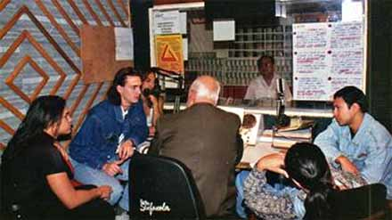
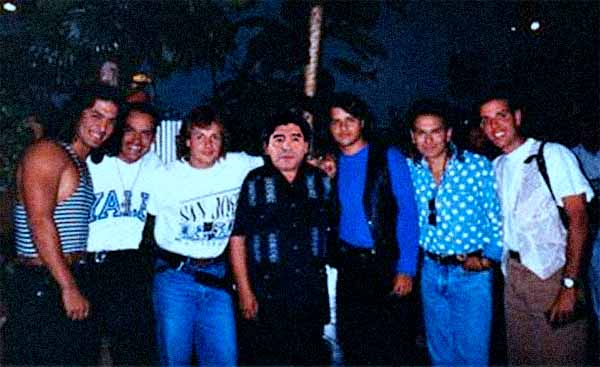
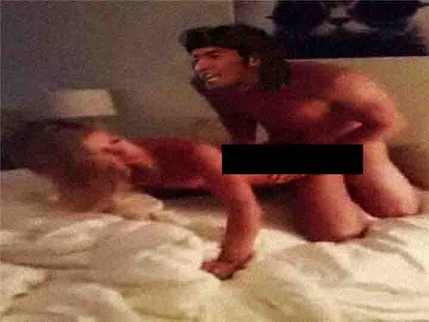
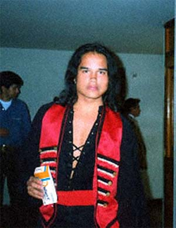

Últimas novedades
Progreso de nuestro próximo disco
20 de enero del 2006 Para alegría de nuestras fans, estamos empezando a comenzar un nuevo proyecto, el cual repasará toda nuestra historia y trayectoria a lo largo de estos años que hemos compartido juntos. Si bien no tenemos una fecha estipulada, sepan que tendrán el nuevo disco muy pronto en sus manos.
Fans hacen versión propia de "Muchacha Triste"
3 de enero del 2006Nos encanta que nuestros fans hagan sus propias versiones de nuestros temas! Aquí una versión super chévere hecha por "Los Monitos Animados"
Si quieres enviarnos tus propias versiones, no dudes en enviarnoslas a nuestra casilla de e-mail: fantasmasdelcaribe@aol.com
Conocimos a Maradona en nuestra última gira
17 de noviembre del 2005 En nuestra última gira latinoamericana, tuvimos el placer de tocar en Buenos Aires, Argentina. Allí, en medio de todo el público estaba el mismísimo Diego Armando Maradona. No dudamos en subirlo al escenario y hacerlo cantar con nosotros. Posteriormente pudimos tomarnos una foto en grupo con él.
¿El video porno de Eddie?
26 de octubre del 2005 Ha estado circulando por internet unas imágenes de un supuesto video de nuestro tecladista secundario Eddie González. Aquí por la web oficial de Los Fantasmas del Caribe queremos aclarar que dicho video de índole pornográfico no existe. Según palabras del mismísimo Eddie No, por supuesto que no soy yo, no suelo hacer ese tipo de cosas y no me molestaría decir que soy yo en caso de que saliera algo así a la luz. Yo creo que a las chicas les gusta ese tipo de cosas de sus ídolos.
Concierto en Guatemala suspendido
8 de septiembre del 2005 Lamentablemente nuestro concierto del día de mañana en Mazatenango, Guatemala ha sido cancelado debido a que nuestro guitarrista Richie ha contraído una enfermedad muy contagiosa y debe ser hospitalizado de inmediato. Para tranquilidad de las fans, él se encuentra fuera de peligro y el concierto se reprograma al día 18 de septiembre. Lamentamos todas las molestias ocasionadas.